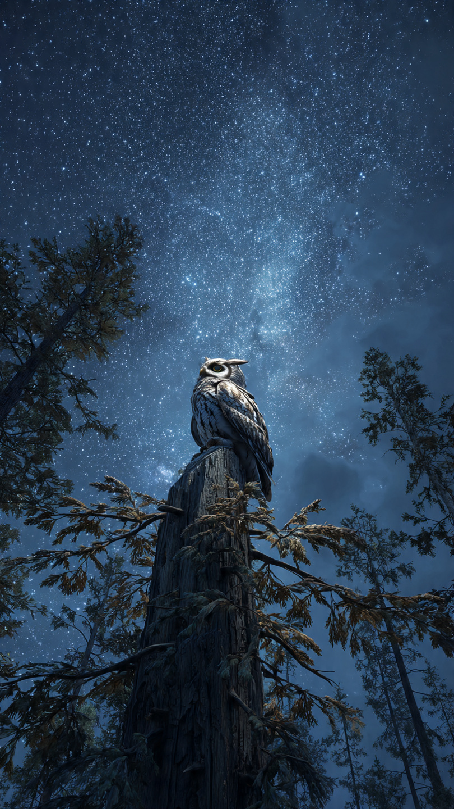
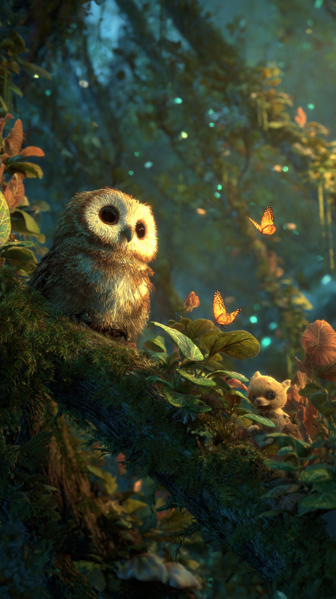

```html
🦉 البومة التي لم تنم لمدة عام كامل | قصص أطفال
```
في أعلى شجرة قديمة وسط الغابة، كانت تعيش بومة صغيرة اسمها بيلا.
كانت بيلا مختلفة عن باقي البوم.
فالبوم معروف بأنه يحب الليل والهدوء والنوم في النهار، لكن بيلا كانت لا تنام كثيرًا.
كانت تحب مراقبة النجوم، واكتشاف أسرار الغابة، والاستماع إلى أصوات الحيوانات ليلًا ونهارًا.
كان أصدقاؤها يقولون لها:
"يا بيلا، يجب أن تنامي مثل باقي البوم."
فتضحك وتقول:
"هناك أشياء كثيرة جميلة تحدث في العالم، ولا أريد أن أفوتها."
مرت الأيام، وبدأت بيلا تنام ساعات أقل فأقل.
كانت تستيقظ دائمًا لتساعد الحيوانات، وتحرس الغابة، وتراقب كل شيء يحدث فيها.
حتى جاء يوم قالت فيه:
"سأبقى مستيقظة لأطول فترة ممكنة!"
ولم تكن تعرف أن هذا القرار سيغير حياتها.
مرت أسابيع...
ثم شهور...
حتى أصبح الجميع يتحدث عن البومة التي لم تنم لمدة عام كامل.
لكن مع مرور الوقت، بدأت بيلا تشعر بالتعب.
أصبحت ترى الأشياء ببطء، وأحيانًا كانت تنسى أين وضعت أغراضها.
وفي ليلة مظلمة، حدث أمر خطير في الغابة.
اختفى صوت الرياح، وساد هدوء غريب.
لاحظت بيلا أن هناك شيئًا غير طبيعي يحدث، لكنها كانت متعبة جدًا.
قالت:
"يجب أن أعرف ما يحدث..."
وطارت فوق الأشجار.
لكنها لم تكن تعلم أن جسمها يحتاج إلى الراحة أكثر من أي وقت مضى.
وفجأة...
رأت ضوءًا غريبًا في أعماق الغابة.
كان هناك سر ينتظرها، وسيجعلها تفهم لماذا تحتاج كل المخلوقات إلى النوم.
📷 الصورة رقم 1

طارت بيلا باتجاه الضوء الغريب في وسط الغابة.
كانت الأشجار من حولها هادئة بشكل غير معتاد، والنجوم تلمع فوقها بطريقة جميلة.
عندما اقتربت، وجدت مكانًا صغيرًا تحيط به أزهار مضيئة.
وفي وسط المكان كانت توجد شجرة قديمة جدًا.
سمعت بيلا صوتًا هادئًا يقول:
"لماذا لا تعطين نفسك وقتًا للراحة يا بيلا؟"
نظرت حولها ولم تجد أحدًا.
ثم اكتشفت أن الصوت يأتي من الشجرة.
قالت بيلا:
"أريد أن أرى كل شيء، وأساعد الجميع، ولا أريد أن أضيع أي لحظة."
أجابت الشجرة:
"لكن حتى أقوى المخلوقات تحتاج إلى الراحة."
"النوم ليس ضياعًا للوقت، بل هو ما يجعلك قادرة على فعل الأشياء الجميلة."
فكرت بيلا في كلام الشجرة.
تذكرت كيف أصبحت متعبة، وكيف بدأت تنسى الأشياء، وكيف لم تعد تستمتع بالمغامرات مثل السابق.
قالت:
"ربما كنت أحاول أن أفعل الكثير دون أن أهتم بنفسي."
في تلك اللحظة، سمعت بيلا صوت استغاثة.
كانت مجموعة من الطيور الصغيرة قد علقت بين الأغصان العالية بسبب الرياح.
حاولت بيلا مساعدتهم، لكنها شعرت بأنها لا تملك الطاقة الكافية.
وصلت الحيوانات الأخرى لمساعدتها.
قال الأرنب:
"لماذا لم تطلبي المساعدة منا؟"
أجابت بيلا:
"كنت أظن أنني يجب أن أفعل كل شيء وحدي."
ابتسمت الحيوانات وقالت:
"الأصدقاء يساعدون بعضهم البعض."
ساعد الجميع الطيور الصغيرة، وشعرت بيلا بسعادة كبيرة.
لكنها أدركت أن هناك درسًا أهم يجب أن تتعلمه.
📷 الصورة رقم 2

بعد أن ساعدت بيلا الطيور الصغيرة، عادت إلى شجرتها القديمة وهي تفكر في كل ما حدث.
نظرت إلى القمر وقالت:
"كنت أظن أن القوة تعني أنني لا أتوقف أبدًا..."
"لكنني تعلمت أن القوة الحقيقية هي أن أعرف متى أحتاج إلى الراحة."
في تلك الليلة، قررت بيلا أن تنام لأول مرة منذ وقت طويل.
أغلقت عينيها، وشعرت بالهدوء.
وفي الصباح، استيقظت وهي تشعر بطاقة جديدة.
كان كل شيء يبدو أجمل.
ألوان الأشجار كانت أوضح، وأصوات الطيور كانت أجمل، وحتى ضوء الشمس كان أكثر دفئًا.
ذهبت بيلا إلى أصدقائها وقالت:
"لقد اكتشفت شيئًا مهمًا."
سألتها الحيوانات:
"ماذا؟"
أجابت:
"لا يمكننا مساعدة الآخرين إذا لم نهتم بأنفسنا أولًا."
ومنذ ذلك اليوم، أصبحت بيلا بومة أكثر حكمة.
كانت لا تزال تحب مراقبة النجوم واكتشاف أسرار الغابة، لكنها أصبحت تعرف متى تعمل ومتى ترتاح.
وأصبحت الحيوانات الصغيرة تأتي إليها لتتعلم منها.
لم تكن بيلا مشهورة لأنها لم تنم لمدة عام...
بل لأنها تعلمت أهم درس:
أن الراحة جزء من النجاح.
وفي كل ليلة، عندما كانت ترى النجوم، كانت تبتسم وتقول:
"حتى النجوم تحتاج إلى الظلام لكي تلمع."
🦉🌙 انتهت القصة 🌙🦉
العبرة:
الاهتمام بالنفس والراحة يساعداننا على أن نكون أقوى ونساعد من حولنا بشكل أفضل.